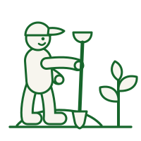

Paysagiste en Gironde
Votre jardin, conçu et réalisé sur mesure.
Conception, engazonnement, massifs, allées, clôtures. Nous partons de votre terrain et de vos envies, puis nous réalisons — avec des végétaux choisis pour tenir dans le climat girondin.
- Devis gratuit sous 24 h
- Crédit d'impôt de 50 %
- Entreprise déclarée services à la personne
- Toute la Gironde
Recevoir mon devis de création
Réponse sous 24 h ouvrées. Sans engagement.
Pourquoi nous
Ce que vous obtenez

Un projet pensé pour votre terrain
Exposition, nature du sol, usage réel de l'espace : le plan part de ce que vous avez, pas d'un catalogue.

Des végétaux adaptés au climat girondin
Sélectionnés avec notre partenaire Villaverde Cestas, à prix préférentiel pour nos clients.

De la remise en état à la finition
Débroussaillage, terrassement léger, engazonnement, massifs, allées, bordures et nettoyage de fin de chantier.

Un devis détaillé, poste par poste
Vous savez exactement ce que vous payez, et ce qui peut attendre une seconde phase si le budget l'impose.
Prestations incluses
Nos prestations de création et d'aménagement
- Étude du terrain et proposition d'aménagement
- Préparation du sol, terrassement léger et remise à niveau
- Engazonnement : semis ou gazon en plaques
- Création de massifs, plantation d'arbustes et de vivaces
- Allées, bordures, pas japonais et structures paysagères
- Pose de clôtures, palissades et brise-vues
- Nettoyage complet en fin de chantier

Déroulement
Du premier échange au jardin fini
Visite et écoute
Nous venons voir le terrain, comprendre l'usage que vous en faites et ce que vous voulez y changer.
Plan et devis détaillé
Une proposition d'aménagement et un devis poste par poste, sous 24 h après la visite.
Réalisation
Préparation du sol, plantations, engazonnement, structures. Un chantier tenu propre du début à la fin.
Suivi et entretien
Nous restons disponibles pour la reprise des végétaux, et pour l'entretien régulier si vous le souhaitez.
Partenariat commercial
Un partenariat de confiance avec Villaverde Cestas
Grâce à ce partenariat, les clients qui passent par Jardin de Gironde bénéficient de prix préférentiels sur les plantes du magasin.
Demander un devisRéalisations
Le travail parle de lui-même
Des chantiers réels, photographiés sur le terrain, en Gironde. Pas d'images de synthèse : ce que vous voyez est ce que nous faisons.


Zone d'intervention
Nous intervenons partout en Gironde
Bordeaux · Mérignac · Pessac · Talence · Bègles · Villenave-d'Ornon · Gradignan · Cestas · Canéjan · Le Haillan · Le Bouscat · Bruges · Eysines · Saint-Médard-en-Jalles · Léognan · Cadaujac · La Brède · Martillac · Créon · Libourne · Arcachon · Andernos-les-Bains, et l'ensemble des communes du département.
Bon à savoir
Questions fréquentes
Combien coûte la création d'un jardin ?
Tout dépend de la surface, de l'état du terrain et des aménagements souhaités. C'est pour cela que nous nous déplaçons avant de chiffrer : le devis est gratuit, détaillé poste par poste, et vous n'avez aucun engagement.
Le crédit d'impôt de 50 % s'applique-t-il aux travaux de création ?
Non, et nous préférons le dire clairement. Le crédit d'impôt services à la personne concerne l'entretien courant du jardin (tonte, taille, débroussaillage, désherbage). Les travaux de création et d'aménagement paysager n'y ouvrent pas droit — en revanche, l'entretien qui suivra, oui.
Fournissez-vous les végétaux ?
Oui. Grâce à notre partenariat avec Villaverde Cestas, nos clients bénéficient de prix préférentiels sur les plantes du magasin. Nous sélectionnons des espèces adaptées au climat girondin, pour qu'elles tiennent dans le temps.
Quel délai entre le devis et le chantier ?
Le devis vous parvient sous 24 h ouvrées après notre visite. Le démarrage du chantier dépend de son ampleur et de la saison de plantation ; nous vous donnons une date ferme au moment de la signature.
Reprenez-vous un jardin existant à remettre en état ?
C'est une grande partie de notre travail : terrains laissés à l'abandon, pelouses à refaire, massifs à restructurer. Nous partons de l'existant plutôt que de tout raser.
Contact
Demandez votre devis gratuit
Décrivez votre projet : nous vous répondons sous 24 h avec une estimation claire et sans engagement.
- 06 30 64 47 09
- jardindegironde@gmail.com
- Toute la Gironde
- Lun – Sam, 8 h – 19 h
Recevoir mon devis gratuit
Réponse sous 24 h ouvrées. Sans engagement.